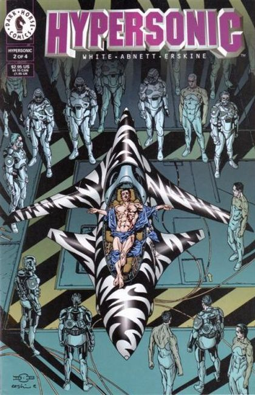
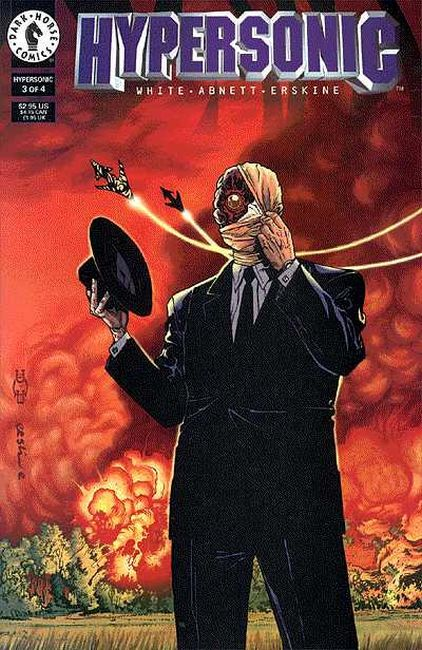
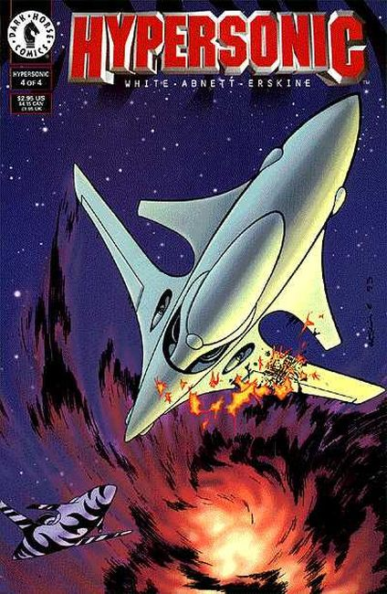

Any air force pilot in the year 2009 can run down the rumors: alien technology, men in black, top secret fighter planes. But pilot Wesley Anger knows the facts. He's staking his life on it. X-files, conspiracy theories, and UFOs move at mach speed in Dark Horse's strangest, fastest series yet!

How would you like to wake up trapped in a secret government facility with your body riddled by neuro-alloy implants? For fighter pilot Wesley Anger, it's a nightmare come true.

William Anger wants to know if his brother Wesley is really dead. The Men in Black say he isn't. They say he's joined a top-secret squadron of pilots that fly fighter planes designed from alien technology. But meanwhile, Wesley just wants to know why his new, top-secret fighter plane is talking to him. And why he's fallen in love with her.

The Man in Black tells all and the conspiracy is revealed! But will it be enough to save Wesley as he goes head to head with another Pale Horse alien hybrid fighter . . . and an alien pilot? Be here for the climactic ending to Dark Horse's strangest, fastest series yet!